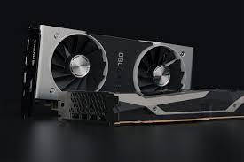
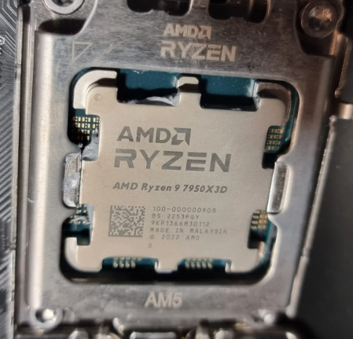
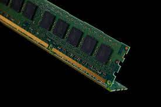

Computer hardware is a term used to describe any of the physical components of a digital computer. The term hardware distinguishes the physical aspects of a computing device from software, which consists of written, machine-readable instructions that tell physical components what to do and when to execute the instructions.
This page will only talk about some of the important physical components of hardware and explain what they do and how'll it affect your gaming experience.
The Physical Components Listed:
The GPU (Graphics Processing Unit) is a computer chip that renders images and graphics by preforming rapid mathetical calculatons. It is specifically designed to handle and acceleralte graphics workload and display graphics content on a device. It can process many pieces of data simultaneously, making them useful for machine learning (AI) and gaming applications.

A CPU takes instructions from a program or application and performs a calculation. This process breaks down into three key stages: fetch, decode and execute. A CPU fetches the instruction from the RAM, decodes what the instruction actually is, and then executes the instruction using the relevant parts of the CPU itself. It is like a very fast calculator with the executed instruction, calculation, can range from comparing numbers, basic arithmetic, performing a function, moving numbers around in memory, etc. It is often called the brain of a computer.

Random-access memory, or RAM, is one of the most important parts of your computer. It provides high-speed, short-term memory for your computer’s CPU. Sometimes it’s called PC memory or just memory. It is basically your computer or laptop’s short-term memory. It’s where the data is stored that your computer processor needs to run your applications and open your files.
